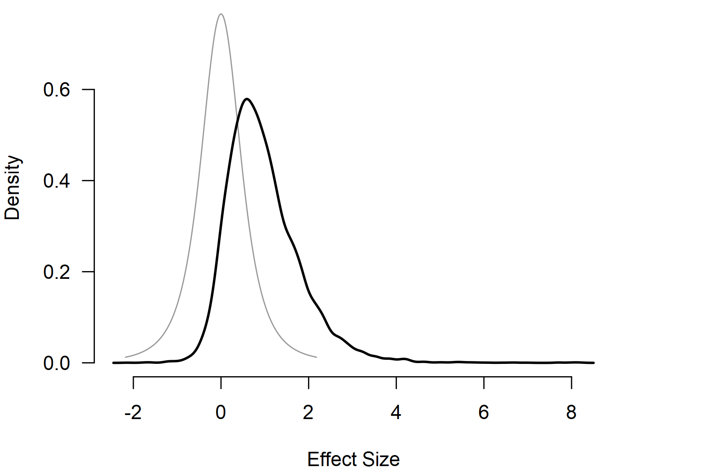

Informed Bayesian Model-Averaged Meta-Analysis with Binary Outcomes
František Bartoš
13th of June 2023 (updated: 4th of May 2026)
Source:vignettes/v35-bma-glmm-medicine.Rmd
v35-bma-glmm-medicine.RmdThis vignette accompanies the manuscript Empirical Prior Distributions for Bayesian Meta-Analyses of Binary and Time-to-Event Outcomes preprinted at arXiv (Bartoš et al., 2023).
Bayesian model-averaged meta-analysis can be specified using the binomial likelihood and applied to data with dichotomous outcomes. This vignette illustrates how to do this with an example from Bartoš et al. (2023), who implemented a binomial-normal Bayesian model-averaged meta-analytic model and developed informed prior distributions for meta-analyses of binary and time-to-event outcomes based on the Cochrane database of systematic reviews. See Bartoš et al. (2021) for informed prior distributions for meta-analyses of continuous outcomes, highlighted in the Informed Bayesian Model-Averaged Meta-Analysis in Medicine vignette.
Binomial-Normal Bayesian Model-Averaged Meta-Analysis
We illustrate how to fit the binomial-normal Bayesian model-averaged
meta-analysis using the RoBMA R package. For this purpose,
we reproduce the example of adverse effects of honey in treating acute
cough in children from Bartoš et al. (2023), who reanalyzed two
studies with adverse events of nervousness, insomnia, or hyperactivity
in the honey vs. no treatment condition that were subjected to a
meta-analysis by Oduwole et al. (2018).
We load the RoBMA R package and specify the number of
adverse events and sample sizes in each arm as described on p. 73 of
Oduwole et al. (2018).
library(RoBMA)
events_experimental <- c(5, 2)
events_control <- c(0, 0)
observations_experimental <- c(35, 40)
observations_control <- c(39, 40)
study_names <- c("Paul 2007", "Shadkam 2010")Notice that both studies reported no adverse events in the control group. Using a normal-normal meta-analytic model with log odds ratios would require a continuity correction, which might result in bias. Binomial-normal models allow us to circumvent the issue by modeling the observed proportions directly (see Bartoš et al. (2023) for more details).
We fit the binomial-normal Bayesian model-averaged meta-analysis
using informed prior distributions based on the
Acute Respiratory Infections subfield. We use the
BMA.glmm() function and pass in the per-arm event counts
(ai, ci) and sample sizes (n1i,
n2i); measure = "OR" selects the
binomial-normal likelihood. The prior_informed_field and
prior_informed_subfield arguments request the informed
prior distributions for the individual medical subfields
automatically.
fit_BMA <- BMA.glmm(
ai = events_experimental, n1i = observations_experimental,
ci = events_control, n2i = observations_control,
slab = study_names, measure = "OR",
prior_informed_field = "medicine",
prior_informed_subfield = "Acute Respiratory Infections",
seed = 1, parallel = TRUE
)with prior_informed_field = "medicine" and
prior_informed_subfield = "Acute Respiratory Infections"
corresponding to the
and
informed prior distributions on the log-odds-ratio scale (see
?prior_informed for more details regarding the informed
prior distributions).
We obtain the output with the summary() function. Adding
the conditional = TRUE argument allows us to inspect the
conditional estimates, i.e., the effect size estimate assuming that the
models specifying the presence of the effect are true, and the
heterogeneity estimates assuming that the models specifying the presence
of heterogeneity are true. The summary reports parameter estimates on
the log-odds-ratio scale; we use pooled_effect() with
transform = "EXP" to obtain the estimates on the odds-ratio
scale.
summary(fit_BMA, conditional = TRUE, include_mcmc_diagnostics = FALSE)
#>
#> Bayesian Model-Averaged Random-Effects Model (k = 2)
#>
#> Component Inclusion
#> Prior prob. Post. prob. Inclusion BF
#> Effect 0.500 0.726 2.643
#> Heterogeneity 0.500 0.559 1.269
#>
#> Estimates
#> Mean SD 0.025 0.5 0.975
#> mu 0.704 0.838 -0.180 0.506 2.732
#> tau 0.399 0.734 0.000 0.149 2.487
#>
#> Conditional Estimates
#> Mean SD 0.025 0.5 0.975
#> mu 0.971 0.843 -0.255 0.835 2.933
#> tau 0.713 0.859 0.096 0.412 3.089The output from the summary() function has three parts.
The first one provides a basic summary of the fitted models by component
types (presence of the effect and heterogeneity). The table summarizes
the prior and posterior probabilities and the inclusion Bayes factors of
the individual components. The results show that the inclusion Bayes
factor for the effect is similar to the one reported in Bartoš et al. (2023),
and
(minor differences are a consequence of the product-space estimation
algorithm in the new version of the package), giving weak/undecided
evidence for the presence of the effect and heterogeneity.
The second part under the ‘Model-averaged estimates’ heading displays the parameter estimates model-averaged across all specified models (i.e., including models specifying the effect size to be zero). These estimates are shrunk towards the null hypotheses of no effect or no heterogeneity in accordance with the posterior uncertainty about the presence of the effect or heterogeneity. We find the model-averaged mean effect OR = 3.39, 95% CI [0.84, 15.14], and a heterogeneity estimate , 95% CI [0.00, 2.59].
The third part under the ‘Conditional estimates’ heading displays the conditional effect size and heterogeneity estimates (i.e., estimates assuming presence of the effect or heterogeneity) corresponding to the ones reported in Bartoš et al. (2023), OR = 4.24, 95% CI [0.78, 17.61], and a heterogeneity estimate , 95% CI [0.10, 3.23].
The dedicated helper functions can be used to extract the pooled effect and heterogeneity estimates directly on the odds-ratio scale (assuming the presence of the effect and heterogeneity respectively):
pooled_effect(fit_BMA, conditional = TRUE, transform = "EXP")
#>
#> Conditional Pooled Effect Size (odds ratio)
#> Mean Median 0.025 0.975
#> mu 6.241 2.304 0.775 18.780
#> Effect estimates are summarized on the odds ratio scale using EXP on the log odds ratio measure.
pooled_heterogeneity(fit_BMA, conditional = TRUE)
#>
#> Conditional Pooled Heterogeneity
#> Mean Median 0.025 0.975
#> tau 0.713 0.412 0.096 3.089We can also visualize the posterior distributions of the effect size
and heterogeneity parameters using the plot() function.
Here, we set the conditional = TRUE argument to display the
conditional effect size estimate and prior = TRUE to
include the prior distribution in the plot.

Additional visualizations and summaries are demonstrated in the Bayesian Meta-Analysis and Informed Bayesian Model-Averaged Meta-Analysis in Medicine vignettes.